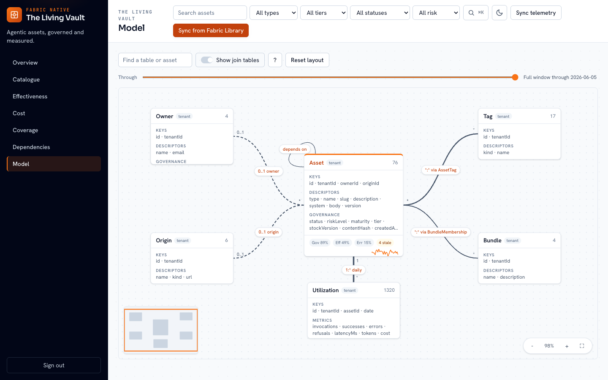
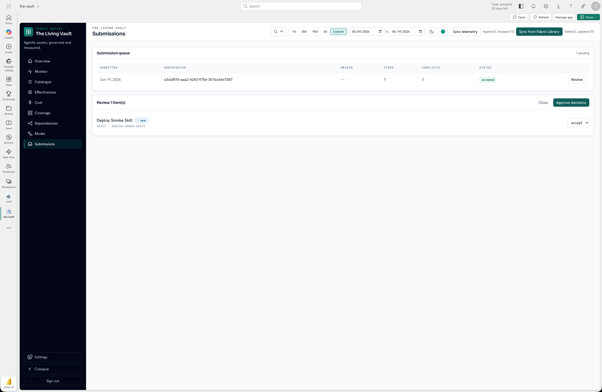

No cross-harness view
No trace tool answers how one skill performs in Claude Code vs Codex vs Copilot vs Grok, because each one watches a single application.
See what exists, what is governed, what runs, what earns its place, and what needs action, across every harness. The unit of analysis is the reusable agentic asset itself, not the run or the span.
Illustrative panel - no real metrics
Tracing and observability tooling each watches a single application. The reusable asset that moves between harnesses falls through the gap. That gap is the wedge.
No trace tool answers how one skill performs in Claude Code vs Codex vs Copilot vs Grok, because each one watches a single application.
LLM observability tools like LangSmith and Langfuse instrument the runs and spans of an app you built. The Vault's unit of analysis is the reusable agentic asset itself.
The competitive set is nascent skill catalogs that do distribution only, with nothing on effectiveness. That whitespace is the wedge.
| Dimension | Trace observability | The Living Vault |
|---|---|---|
| Unit of analysis | Run, span, trace of one application | Reusable skill, subagent, MCP server, prompt |
| Scope | Single app you built and instrumented | Cross-harness: Claude Code, Codex, Copilot, Grok |
| Registry | No editable system of record for assets | Governed catalog you can add, edit, and retire |
| Instrumentation honesty | Assumes full trace coverage | Per-metric fidelity grades; gaps shown, never faked |
The Vault is an operations monitor, not a passive catalogue. Every surface leads with status and action.
Catalogue, Overview
Coverage, Overview
Effectiveness, Monitor
Effectiveness, Cost
Coverage, Monitor queue
Dependencies, Model
Monitor exception queue: triage stale, ungoverned, and orphaned usage before it becomes drift.
One discipline expressed on three axes. Each axis is a working surface, not a slogan.
The editable system of record. Every asset has a definition, an owner, and a state you can change in place.
Add, edit, retire in the Catalogue
The cross-harness Monitor. One asset, watched across every harness it runs in, on a single pane.
HarnessSummaryStrip + per-harness usage panels
The effectiveness signal that says which assets earn their place, and which should be retired.
No telemetry shown as a gap, not a measured zero
Status before structure. Risk before decoration. Action before raw data. These two surfaces carry that priority order.
The Monitor is mission control: a data-health strip, a triage-able exception queue, per-asset topology with named lenses, and usage panels for all four harnesses on one pane.

The /model canvas is not a static ER diagram. Table cards carry governed and effective rates, error rates, staleness badges, and live usage sparklines. Edges are weighted by link counts; a time scrubber moves signal through the utilization window.

The public demo runs on synthetic data at zero Fabric cost. A live Rayfin deploy on Microsoft Fabric proves the same semantic model, utilization facts, and Monitor surfaces on real infrastructure.

Telemetry lands in the Utilizations table behind effectiveness metrics.
North-star ops surface: harness strip, exception queue, topology.

Executive quadrant and what-to-fix-next triage on the same model.
It is an operations monitor, not a passive catalogue or static schema viewer. The priority order is the same on every surface.
Every asset has a visible operational state. Live data drives the state; static metadata only explains what that state means.
Distribution and effectiveness are usually separate products. The Vault closes the loop, and the closed loop is the moat.
Distribution catalog. Installs the same agentic assets across harnesses and devices.
Upstream catalog projection source. Feeds fabric-library.json into the Vault catalog.
System of record and effectiveness monitor. Measures which assets earn their place after install.
See the full ecosystem map: Library → Fabric → Power BI → governance
Anthropic's own self-service analytics practice found that agent skill accuracy drifted from about 95 percent at launch to about 65 percent within a month, and that a one-off audit-and-fix project regresses back to where it started in weeks. Skills and context are not something you clean up once. They are a product you govern, measure, and maintain like code.
That is why the Vault is a living system of record and not a static catalog. It holds the effective-asset rate, grades how honestly each number is measured, and flags assets whose effectiveness is sliding before they become dead weight. Source: Anthropic, "How Anthropic enables self-service data analytics with Claude," as summarized by Tabular Editor.
Each harness carries a per-harness honesty grade so a reader always knows the fidelity behind a signal. The grades are full, partial, occupancy, derived, and none.
| Grade | What it means |
|---|---|
| full | Directly instrumented end to end. This is Claude Code today. |
| partial | Measured where the logs allow, with the gaps marked. |
| occupancy | Presence and activity are observable; full outcomes are not. |
| derived | Inferred from adjacent signals, and labeled as inference. |
| none | Not measurable today. Shown as a gap, never invented. |
Claude Code is fully instrumented. The other harnesses are summarized at the fidelity their logs allow, each tagged with the grade that reflects its real coverage.
The product never fakes a number it cannot measure.
Grades are illustrative labels for fidelity, not scores or rankings.
| Harness | Typical grade | What you get |
|---|---|---|
| Claude Code | full | Per-asset invocations, successes, errors, latency from transcript metadata |
| Codex | partial | Session-level signals from rollout logs; gaps marked |
| Copilot | occupancy | Presence and activity observable; full outcomes not always available |
| Grok | partial | Session summaries at the fidelity local logs allow |
Each surface leads with status and action. Together they cover the asset from inventory to dependency graph.
Primary nav (8)
Deep routes and team workflow
Local-first means harness logs are read on your machine, not inside Fabric. You choose when to push metadata-only snapshots into a live deploy. The product names that tension rather than hiding it.
Full field exclusion list: Telemetry and privacy guide
The public demo runs on synthetic effectiveness data. Live Fabric can ingest real Claude Code usage today: curl the standalone collector from the deployed app, run it on your Mac, and upload the metadata-only JSON in Settings. No private repo checkout required.
Claude, Codex, Grok, Copilot write local session files
Metadata-only parsers; no prompts or responses
./utilization.upload.json on your disk until you import
Reconciles rows to catalog asset ids in Fabric
Effectiveness, Cost, harness panels with honesty grades
/demo/living-vault-collect.mjs (curl, no repo
checkout)
node living-vault-collect.mjs telemetry writes
./utilization.upload.json
Try the demo now; read the full telemetry guide for per-harness sources and excluded fields. No repository access required.
Contributors upload a scanned projection JSON. Maintainers triage in /submissions. Accepted items flow through the same importProjection path as admin sync. Pending submissions stay outside the live catalog until accepted.
A local CLI step produces a projection JSON from the contributor's repo. The browser app never scans disk.
Upload lands in a submission store separate from VaultDataset. Dedup verdicts: new, duplicate, or conflict.
Role-gated /submissions page: accept, request changes, or reject per item or in bulk.
Accepted rows run through importProjection and runDataSourceContract, the same gate as admin sync.
Contributors submit a scanned projection JSON. Pending items stay outside VaultDataset until a maintainer accepts. Accepted rows run through the same importProjection and contract gate as admin sync.

The demo runs synthetic data at zero Fabric cost. Live Fabric already accepts real Claude Code usage: download the collector from the deployed app, run it locally, upload the metadata-only JSON in Settings. Fabric never reads your home directory. Org-wide automatic ingestion (every contributor, attributed rollups, RBAC) is still on the roadmap.
Collectors read local harness logs. Real usage never ships inside a static demo build until you explicitly upload it.
The SWA demo uses seed data at zero Fabric cost. Live Fabric read and write is deployed; per-contributor RBAC and org rollups remain gated work.
Harness logs stay on local disk. The deployed app serves a standalone collector and accepts Settings uploads into Fabric. Team-wide scheduled sync and per-contributor attribution remain future work.
The interactive demo runs on synthetic data at zero Fabric cost. Live Fabric deploys accept real telemetry through the in-app collector and upload wizard.